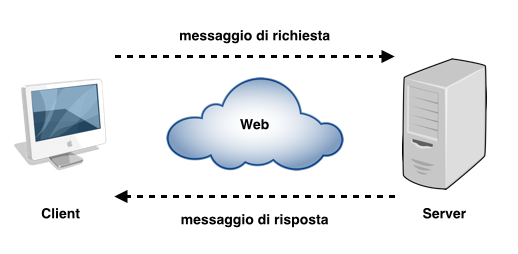

Introduzione
I sistemi informativi hanno subito una significativa evoluzione, passando da architetture centralizzate a
modelli distribuiti, che rispondono meglio alle esigenze di decentralizzazione e cooperazione delle
organizzazioni moderne.
Nei sistemi centralizzati, tutte le applicazioni operano su un singolo processore o
host, che rappresenta l'unico componente autonomo condiviso tra vari utenti. Tutte le risorse di questo
sistema sono accessibili e utilizzate da chiunque vi si connetta.
In un sistema distribuito, invece, le
applicazioni sono suddivise in più processi, eseguiti parallelamente su più unità di elaborazione autonome.
Questi sistemi sono formati dall'unione di CPU, sistemi di memorizzazione e periferiche diverse.
Quando un sistema è considerato distribuito e i ruoli delle sue applicazioni
Un sistema è considerato distribuito quando si verificano almeno una delle seguenti due condizioni:
- Elaborazione distribuita: le applicazioni risiedono su più host che collaborano tra
loro.
- Base di dati distribuita: i dati sono distribuiti su diversi host.
Un sistema distribuito appare all'utente come un singolo sistema coerente, anche se le
macchine coinvolte
sono autonome. Questo è reso possibile da un'infrastruttura hardware e software che gestisce le operazioni
in modo trasparente per l'utente.
Le applicazioni in un sistema distribuito possono assumere ruoli diversi:
- Client: un'applicazione è cliente quando utilizza servizi forniti da altre
applicazioni.
- Server: l'applicazione diventa un servente quando offre servizi ad altre applicazioni.
- Actor: l'applicazione può essere sia client che server, a seconda del contesto in cui
opera.

Classificazione dei sistemi distribuiti
Esistono varie categorie di sistemi distribuiti, basate sull'utilizzo e le finalità:
- Sistemi di calcolo distribuiti: configurati per il calcolo ad alte prestazioni, come il cluster computing e il grid computing.
- Sistemi informativi distribuiti: il web ne è l'esempio più ampio, e le tecnologie mobili hanno accelerato l'evoluzione di questi sistemi, che combinano tecnologie legacy e moderne.
- Sistemi distribuiti pervasivi: si tratta di sistemi con connessioni di rete wireless, spesso integrati in dispositivi di uso quotidiano come i sistemi domestici o i wearable computing.
Copyright © Nessun Copyright 2024